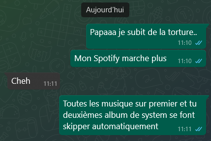

Coucouuu ça va ? Bien dormi ? Moi oui mais il me manquait ma femme.. Je me suis levé grave tôt il était 9h, là il est 10h et je suis en pleine écriture de mon article, je charbone pour pouvoir le rendre vers midi je pense. J'ai fais a peu près 1000 mots là et j'ai pas fini encore. Avant de commencer à écrire j'ai checké vite fait un peu tout, le pdf et le site voir si Adrian ne s'était pas planté et il a oublié les mots en gras sur le site... Du coup je te le dis et là tu me dis la pire chose que tu pourrais me dire "Dis lui de le mettre" WAAAAA MAIS JE VAIS ME FAIRE SOULEVER. Bon tu sais que je ferai tout pour toi hein je vais surmonter ma peur et je vais lui dire vu que t'es occupée... Là je vais lui envoyer un message, changer de pentalon (je me serai chié dessus) prier et retourner écrire mon article. Au fait tant que j'y pense Vendredi je me fais couper les cheveux haha. Bon je te laisse je vais écrire mon testament mdrr. Bisouus !
Coucouu euh je t'écrire vraiment une minute après ce qu'il y a au dessus mdrr mais j'ai un soucis mon Spotify ne veux plus que j'écoute l'album Toxicity de System genre je lance l'album et ça me met une seconde de chaque son jusqu'au dernier et ça coupe, je vais mourir vraiment mdrr bon aller bisous ! Même mon père ! Est dans le coup...

Coucouuu ça va ? Il est 14h bientôt j'ai bien mangé, mon père a fait des pâtes et on y a mit du gruyère sauf que je sens une odeur bizarre, un fois à table. Je dis à mon père "le gruyère est pas périmé ? Mon père dit non et puis je regarde attentivement. Mdrr y avait des taches bleues dans le gruyère.. Du coup on a jetté et on s'est reservi à contre coeur... Et j'ai fini mon article je vais le mettre sur le pdf. Il fait 1600 mots donc ça va en vrai, comme celui à Célia si je dis pas de bêtises. Bref je m'y mets parce que je dois prendre une douche après ça pour aller au cinéma, je vais voir Thunderbolts* Bref Bisouuu mon amouuuur (j'ai vu que tu as fais des buddies j'suis content)
Coucouuu Il est 16h45 là je vais bien de fou ! J'ai tout fini sur mon article j'ai mis en page et j'ai planifié mon article. Adrian n'a toujours pas vu mon message alors qu'il a posté une note sur Insta y a 2h... On te voit en fait. Après ça j'ai pris une douche et mon frère est arrivé avec ma mamie et mon père, je les ait laisser discuter pour envoyer le message sur le groupe du Gay-Lu Times. J'ai géré de fouuu. Je t'aime mon amour, j'espère que tu es fière de moi même si tu es loin de moi...
Coucouu mon amour ! Je suis si bouleversé, tu m'as appelé. Mais avant je suis allé au cinéma pour voir Thunderbolts* Le film est... Je sais pas, bof je dirai. Ni nul ni bien en fait.. Après ça je suis allé au Quick et on a eu un burger gratuit, truc de fou ! Mais bon ça tu le sais déjà du coup j'ai moins de trucs à te dire ce soir... Ah si quand on rentrait au feu rouge ou y a le Legrand on avait la music A.N.U.S. de Ultra Vomit et au même moment y a un vieux aigri qui s'est arrêté à côté de nous. Mon père à monté le son progressivement en faisant exprès mdrr c'était très drole.
Je t'aime mon amour, tu me manques trop je pensais que j'avais passé le cap mais j'ai pleuré quand tu as raccroché tout à l'heure. Pour te l'avouer j'avais déjà commencer avant que tu quittes (un peu comme quand on fait de l'asmr tout les deux en appel). J'aimerai trop te serrer dans mes bras, enfin ressentir la chaleur de ton corps contre le miens, goûter à tes belles et douces lèvres, désirer ton regard et observer les étoiles à travers tes yeux, caresser des belles joues et jouer avec tes soyeux cheveux. Je m'égard là.. Bref, bonne nuit mon amour je t'aime tellement